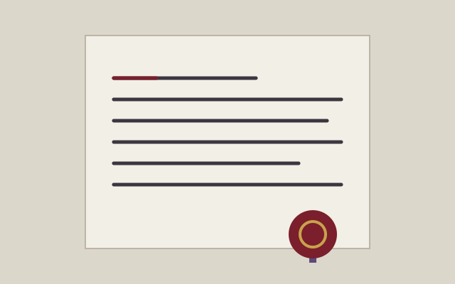
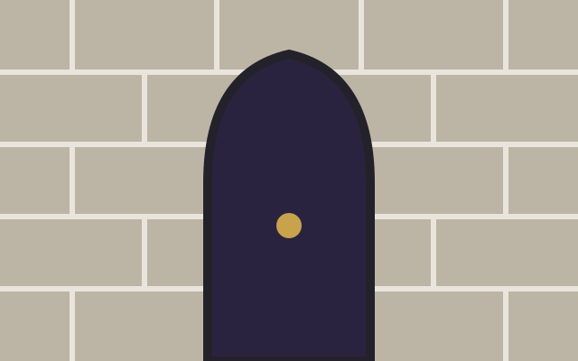
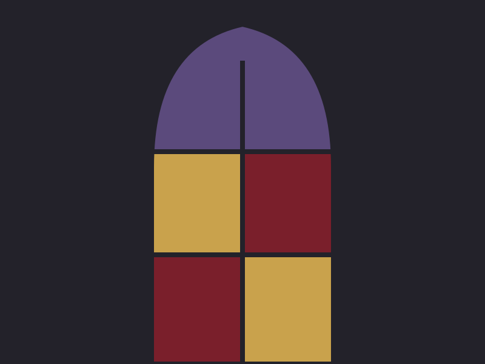
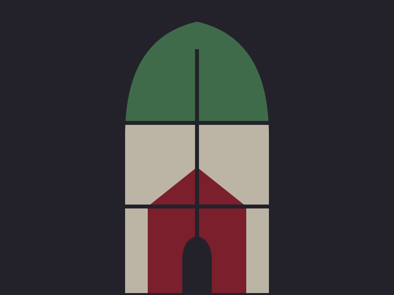
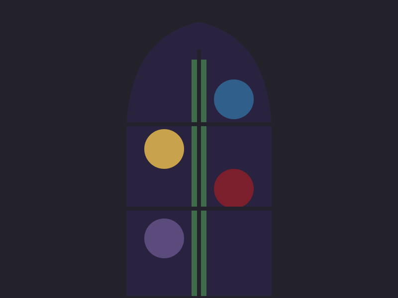
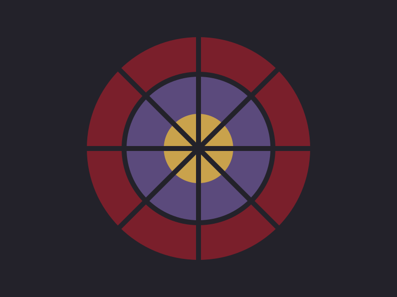
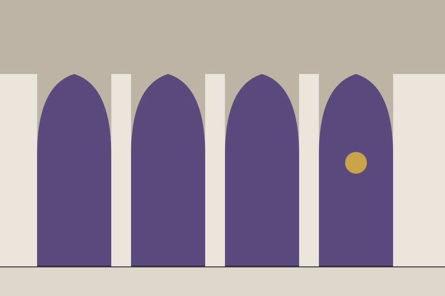
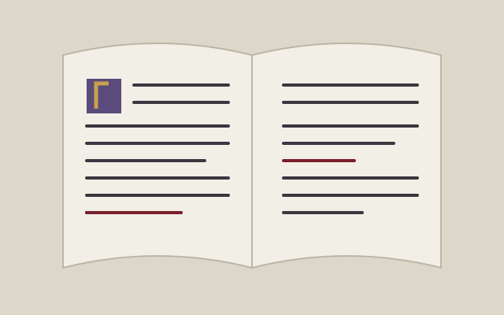
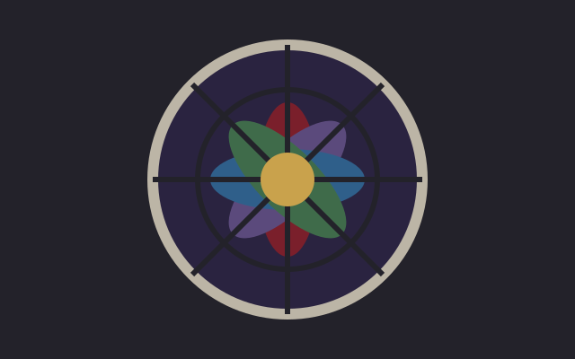

Two stylesheets
theme.css holds the tokens, the palette and the arch itself; global.css holds every rule that uses them.
A retemplate template
Pale stone and iron ink, a crimson accent, one pointed arch. After dark the stone goes black and the accent turns to candle gold. The markup is the same as every other template here; only the stylesheets and the art differ.

Take css/, js/theme.js and assets/ and you have the whole template; everything else on this page exists to show it. These three are the ordinary card with the gothic-arch class, which sets the picture into the panel as a lancet.

theme.css holds the tokens, the palette and the arch itself; global.css holds every rule that uses them.

Every colour is a light-dark() pair. The toggle in the corner cycles auto, light and dark, and remembers the choice.
The palette block in theme.css pastes straight into a retoken site. See the tokens.
Eight windows from the example cathedral. Every thumbnail is a lancet. Click one and the lightbox opens on iron; the arrows are plain links, the close button is a form, and Esc closes it.






The fifty-fifty block gives an image half the width and the text the other half. Add fifty-fifty-reverse and the image moves to the right. On a phone the image comes first either way.

Image left
A heading, a paragraph and a single call to action. That is the whole pattern, and it carries most landing pages.
How it is builtThe dark half
So after dark the accent becomes candle gold and the crimson stays for ornament. The checker measures both halves; the theme page prints the numbers.
See the tokensAccordions are native <details> elements. Give a group the same name and opening one closes the others, with no script. The marker is a small arch that turns over.
No. Copy the folder, link the two stylesheets and the one script, and write HTML.
On h1, h2 and the masthead. Navigation, buttons, tables, forms and body copy stay in Crimson Pro, set in small caps where a label wants weight.
About forty lines for the scheme toggle, and a one-line onclick on anything that opens a dialog. Everything else is HTML and CSS.
A single accordion stands on its own.
css/, js/theme.js, assets/ and this folder's README.md. There is no fonts/ folder unless you self-host the two faces.
Horizontal cards put the media on the left or, with card-media-end, on the right. On a narrow screen they stack.

The image takes a little over a third of the width and the text takes the rest.
The same card with the order flipped. The markup is the same; only one class differs.
Every template has one feature card with an effect of its own. Gothic's is stained glass: hover, and a jewel-coloured wash with lead lines settles over the picture.

The wash is two gradients on a pseudo-element, so this is the same card markup as the ones above. It also answers to keyboard focus inside the card.
Tables sit inside a wrapper that scrolls sideways when they are wider than the page. Headings are small caps over a crimson rule.
Buttons come in three kinds and three sizes, all in small caps. A switch is a checkbox with role="switch". Badges and banners carry status.
Dialogs are native too. The button below opens one; the dialog closes itself through a form.
Prose is what most pages are made of, so .prose styles every construct a markdown renderer produces: headings, lists, quotes, code, tables, footnotes. Blackletter appears on the first two heading levels and nowhere else in the text; the rest is Crimson Pro at a generous size, with real italics.
A template is a promise about what markup will look like. The contract is that promise written down.
The blog post runs the full test document through these rules; defaults shows every bare element without a class on it.